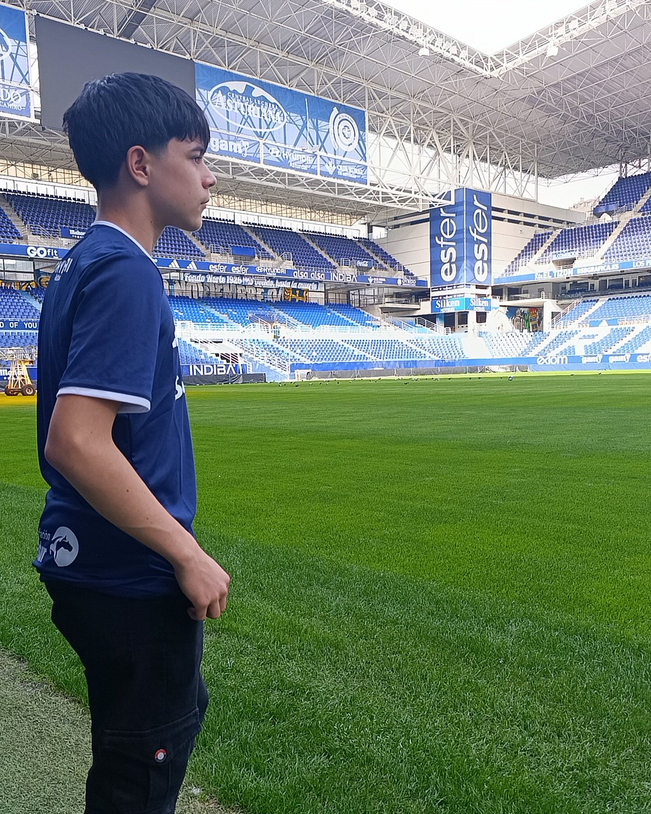
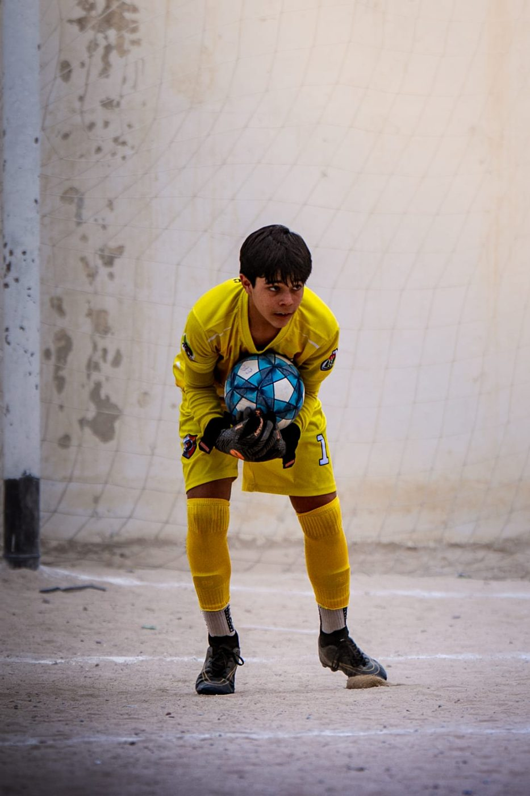
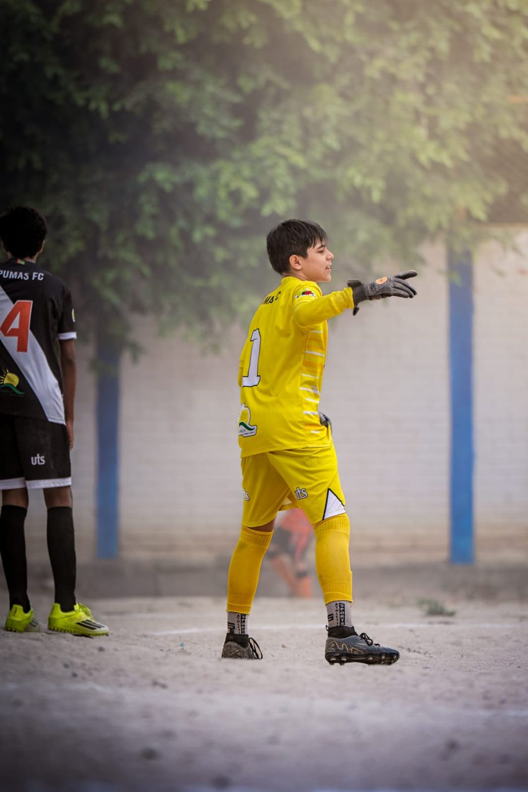
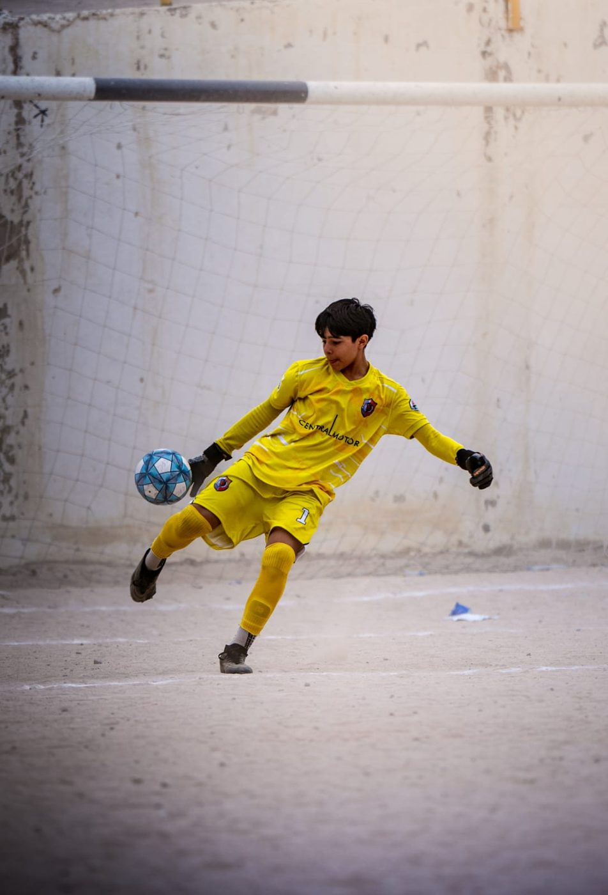
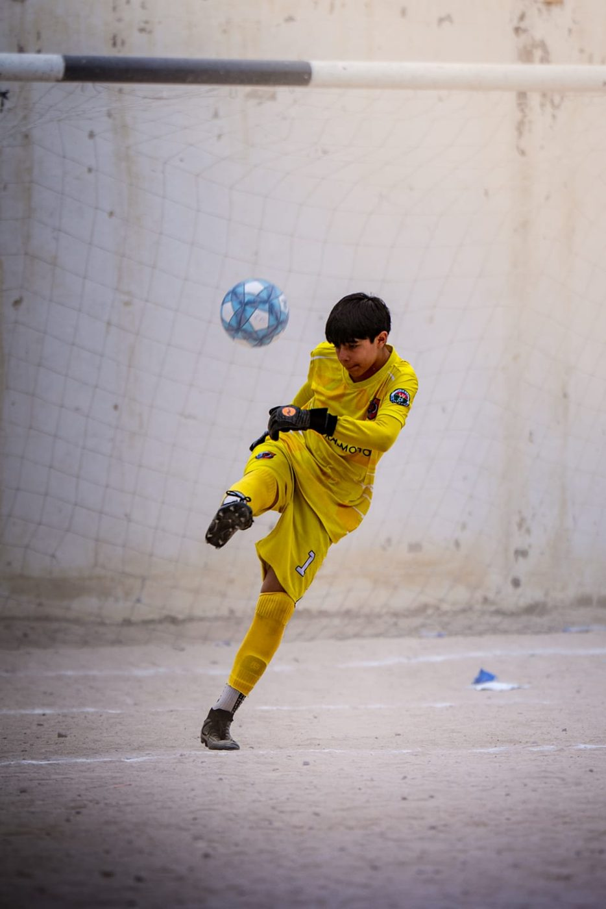
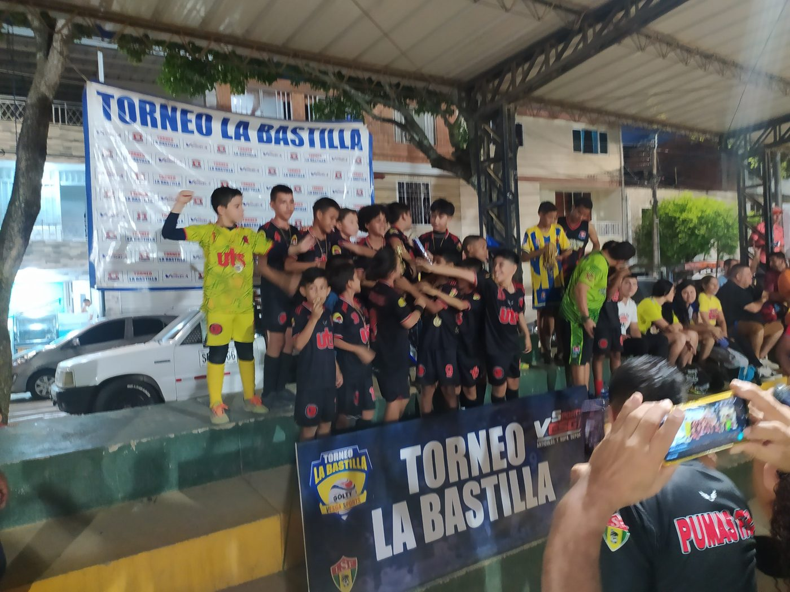
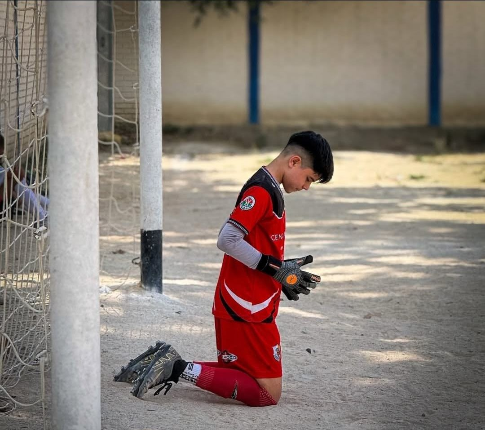
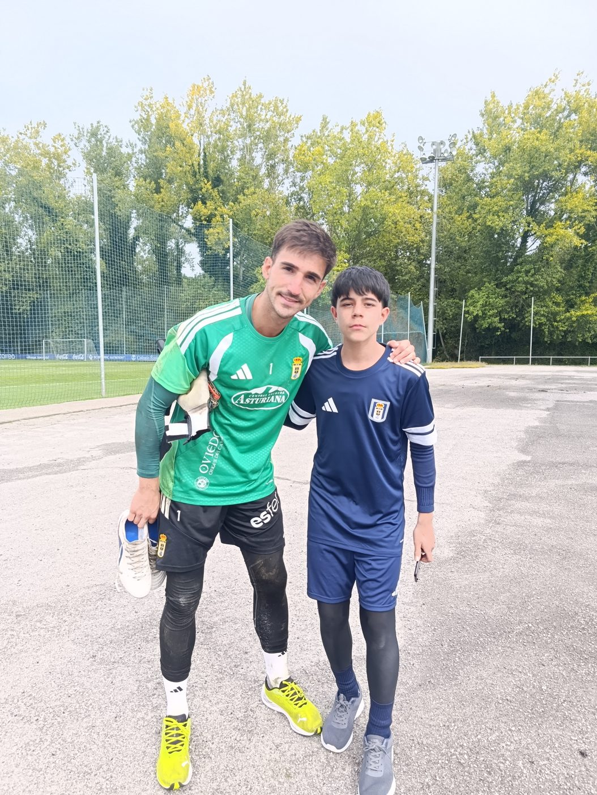
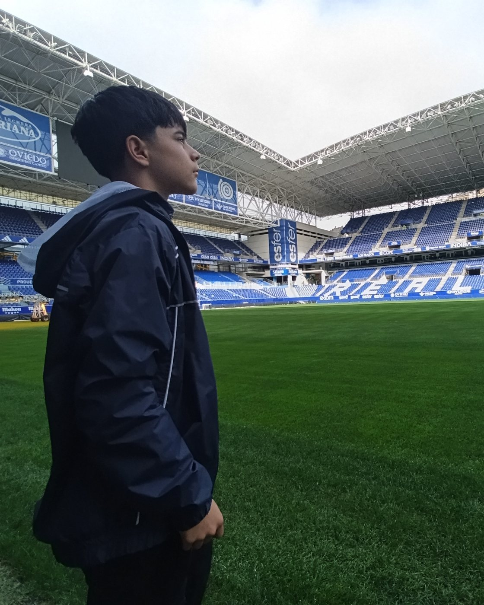
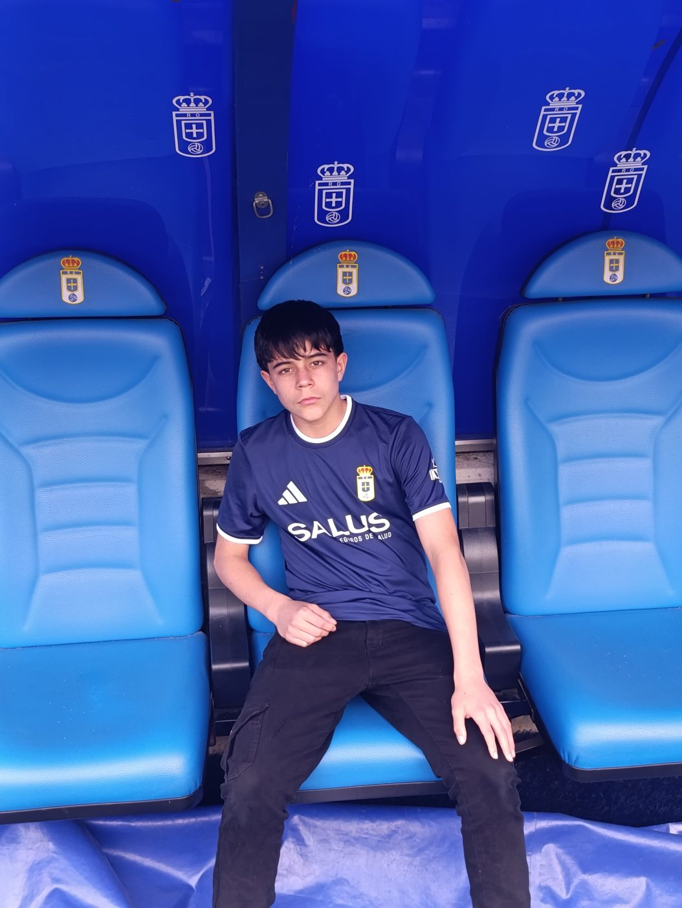

2×
Campeón Sub-12
Torneo La Bastilla · Bucaramanga
2024 · 2025Portero · Categoría 2013
Club actual: Pumas FC · Bucaramanga, Santander, Colombia
Nacionalidades: Colombia · Estados Unidos · Costa Rica

Perfil
Portero en formación desde 2021. Con Pumas FC ha ganado cuatro títulos: el Torneo La Bastilla Sub-12 (2024 y 2025) y Sub-13 (2026), y el torneo de la Liga Santandereana Sub-13B (2025). Seleccionado en las visorías del Real Oviedo en 2025, en septiembre de 2026 fue invitado por el club (España) a entrenar una semana con su cantera.
Arquero de buena técnica y con liderazgo: habla constantemente, ordena la defensa y dirige al equipo desde el arco. Con 1,67 m a los 12 años, tiene una estatura que le da presencia en el área.
Siempre ha complementado el trabajo con su club con formación específica de portero: en 2024, además de entrenar activamente con Pumas FC, hizo todo el año entrenamiento personalizado con el profesor Óscar Ochoa, y desde 2025 entrena y asiste a campamentos con la Academia de Arqueros Roa del profesor Sebastián Roa.
| Año de nacimiento | 2013 |
|---|---|
| Estatura | 1,67 m |
| Peso | 50 kg |
| Complexión | Delgada |
| Pie hábil | Derecho |
| Mano dominante | Derecha |
| Nacionalidades | Colombia · EE. UU. · Costa Rica |
Palmarés · Pumas FC
Torneo La Bastilla · Bucaramanga
2024 · 2025Torneo La Bastilla · Bucaramanga
2026Torneo de la Liga Santandereana de Fútbol
2025Experiencia internacional · 15–22 de septiembre de 2026
Invitado por el Real Oviedo S.A.D. (Segunda División de España), dentro de su Programa Internacional, a entrenar durante una semana con la cantera del club en Oviedo, Asturias, con el objetivo de evaluar su nivel en un contexto real. Llegó a esta invitación tras ser seleccionado en las visorías del club en Colombia en 2025, a cargo del profesor Sebastián Sierra, representante del Real Oviedo en Colombia.
Carta de invitación firmada por la Fundación Real Oviedo disponible a solicitud.
Trayectoria
Inicio como portero (2021–2023)
Llega al club · Campeón Sub-12 del Torneo La Bastilla
Todo el año con el profesor Óscar Ochoa, trabajo individual de portero, en paralelo a su actividad con Pumas FC
Con el profesor Sebastián Roa · Entrenamientos y campamentos de porteros, de 2025 a la fecha, en paralelo con Pumas FC
Campeón Sub-12 del Torneo La Bastilla · Campeón Sub-13B de la Liga Santandereana
Invitado por el profesor Sebastián Roa · Evaluado por el profesor Sebastián Sierra, representante del Real Oviedo en Colombia · Seleccionado para viajar a Oviedo
Pumas FC
Invitado a entrenar una semana con la cantera del club en Oviedo
Galería









Video
Video de jugadas destacadas
próximamente
Contacto
Toda comunicación sobre Allan se realiza a través de su padre.
Ángel Monge